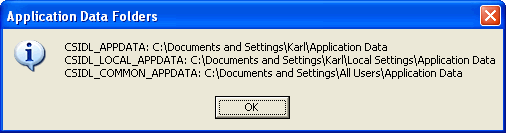

Used to be, system folders were well known and pretty much always in the same
place. You could call GetWindowsDirectory, GetSystemDirectory or GetTempPath, and that would
be all there was to it. Well, times have changed, and there are now dozens of
system-related folders that could be found in any of a wide range of locations,
depending on what operating system your program finds itself running upon. This
little sample shows you how to discover all of the common folder locations. For
instance, the accompanying demo grabs the locations for persisting application
data:

Using the class couldn't be much simpler. (I oughta trademark that one, huh?)
Here's the all code required to generate the above MsgBox:
Public Sub Main()
Dim sf As New CSystemFolders
Dim msg As String
msg = "CSIDL_APPDATA: " & sf.Path(CSIDL_APPDATA) & vbLf & _
"CSIDL_LOCAL_APPDATA: " & sf.Path(CSIDL_LOCAL_APPDATA) & vbLf & _
"CSIDL_COMMON_APPDATA: " & sf.Path(CSIDL_COMMON_APPDATA)
MsgBox msg, vbInformation, "Application Data Folders"
End Sub
The CSystemFolders class offers (as shown above) a Path property to return the
current path for any of the CSIDL paths, an Exists property to test whether or
not the path actually exists yet, and a Description property if you're like me
and forget what the different constants are meant for. Here's the range of
currently available constants you may search for:
Public Property Get Description(ByVal CSIDL As CSIDL_VALUES) As String
Dim sRtn As String
Const au As String = " (all users)"
Const cu As String = " (current user)"
Const sy As String = " (system)"
Const vi As String = " (virtual)"
Select Case CSIDL
' System folders
Case CSIDL_PROGRAM_FILES: sRtn = "C:\Program Files" & sy
Case CSIDL_PROGRAM_FILES_COMMON: sRtn = "C:\Program Files\Common" & sy
Case CSIDL_WINDOWS: sRtn = "C:\Windows" & sy
Case CSIDL_FONTS: sRtn = "C:\Windows\Fonts" & sy
Case CSIDL_SYSTEM: sRtn = "C:\Windows\System" & sy
Case CSIDL_RESOURCES: sRtn = "C:\Windows\Resources" & sy
Case CSIDL_RESOURCES_LOCALIZED: sRtn = "C:\Windows\Resources\{LCID}" & sy
Case CSIDL_SYSTEMX86: sRtn = "x86 system directory on RISC"
Case CSIDL_PROGRAM_FILESX86: sRtn = "x86 Program Files folder on RISC"
Case CSIDL_PROGRAM_FILES_COMMONX86: sRtn = "x86 Program Files Common folder on RISC"
' All user folders
Case CSIDL_COMMON_APPDATA: sRtn = "\Application Data" & au
Case CSIDL_COMMON_DESKTOPDIRECTORY: sRtn = "\Desktop" & au
Case CSIDL_COMMON_DOCUMENTS: sRtn = "\Documents" & au
Case CSIDL_COMMON_MUSIC: sRtn = "\Documents\My Music" & au
Case CSIDL_COMMON_PICTURES: sRtn = "\Documents\My Pictures" & au
Case CSIDL_COMMON_VIDEO: sRtn = "\Documents\My Video" & au
Case CSIDL_COMMON_FAVORITES: sRtn = "\Favorites" & au
Case CSIDL_COMMON_STARTMENU: sRtn = "\Start Menu" & au
Case CSIDL_COMMON_PROGRAMS: sRtn = "\Start Menu\Programs" & au
Case CSIDL_COMMON_ADMINTOOLS: sRtn = "\Start Menu\Programs\Administrative Tools" & au
Case CSIDL_COMMON_STARTUP: sRtn = "\Start Menu\Programs\Startup" & au
Case CSIDL_COMMON_TEMPLATES: sRtn = "\Templates" & au
' Need a better definition ----------------------------------
Case CSIDL_COMMON_OEM_LINKS: sRtn = "Links to OEM specific apps" & au
Case CSIDL_COMMON_ALTSTARTUP: sRtn = "Nonlocalized Startup group" & au
' Current user folders
Case CSIDL_PROFILE: sRtn = "\{username}" & cu
Case CSIDL_APPDATA: sRtn = "\Application Data" & cu
Case CSIDL_COOKIES: sRtn = "\Cookies" & cu
Case CSIDL_DESKTOPDIRECTORY: sRtn = "\Desktop" & cu
Case CSIDL_FAVORITES: sRtn = "\Favorites" & cu
Case CSIDL_LOCAL_APPDATA: sRtn = "\Local Settings\Application Data" & cu
Case CSIDL_CDBURN_AREA: sRtn = "\Local Settings\Application Data\Microsoft\CD Burning" & cu
Case CSIDL_HISTORY: sRtn = "\Local Settings\History" & cu
Case CSIDL_PERSONAL: sRtn = "\My Documents" & cu
Case CSIDL_MYMUSIC: sRtn = "\My Documents\My Music" & cu
Case CSIDL_MYPICTURES: sRtn = "\My Documents\My Pictures" & cu
Case CSIDL_MYVIDEO: sRtn = "\My Documents\My Video" & cu
Case CSIDL_NETHOOD: sRtn = "\NetHood" & cu
Case CSIDL_PRINTHOOD: sRtn = "\PrintHood" & cu
Case CSIDL_RECENT: sRtn = "\Recent" & cu
Case CSIDL_SENDTO: sRtn = "\SendTo" & cu
Case CSIDL_STARTMENU: sRtn = "\Start Menu" & cu
Case CSIDL_PROGRAMS: sRtn = "\Start Menu\Programs" & cu
Case CSIDL_ADMINTOOLS: sRtn = "\Start Menu\Programs\Administrative Tools" & cu
Case CSIDL_STARTUP: sRtn = "\Start Menu\Programs\Startup" & cu
Case CSIDL_TEMPLATES: sRtn = "\Templates" & cu
Case CSIDL_INTERNET_CACHE: sRtn = "\Temporary Internet Files" & cu
' Need a better definition ----------------------------------
Case CSIDL_ALTSTARTUP: sRtn = "Nonlocalized Startup group" & cu
' Virtual folders - no filesystem equivalent!
Case CSIDL_COMPUTERSNEARME: sRtn = "Computers Near Me" & vi
Case CSIDL_DESKTOP: sRtn = "Desktop" & vi
Case CSIDL_INTERNET: sRtn = "Internet Explorer" & vi
Case CSIDL_DRIVES: sRtn = "My Computer" & vi
Case CSIDL_CONTROLS: sRtn = "My Computer\Control Panel" & vi
Case CSIDL_PRINTERS: sRtn = "My Computer\Printers" & vi
Case CSIDL_MYDOCUMENTS: sRtn = "My Documents" & vi
Case CSIDL_CONNECTIONS: sRtn = "Network and Dial-up Connections"
Case CSIDL_NETWORK: sRtn = "Network Neighborhood" & vi
Case CSIDL_BITBUCKET: sRtn = "Recycle Bin" & vi
' Flags
Case CSIDL_FLAG_CREATE: sRtn = "Combine with any other CSIDL to force " & _
"the creation of the associated folder."
' Bad request or unknown constant
Case Else: sRtn = "{unknown constant}"
End Select
End Property
Most systems these days support the SHGetFolderPath function. This was
introduced by the shell enhancements offered with IE5, so it is available even
on older Windows 95 machines. The VirtualPC 2004 "Virtual Machine Additions"
also install shfolder.dll which provides this function, so in that case even
Win95 VMs with IE3 will support the full range of functionality offered by this
class. If SHGetFolderPath is unavailable, CSystemFolders degrades to using the far
more limited SHGetSpecialFolderLocation and SHGetPathFromIDList API function
pair.
There are, of course, wrappers provided for easy discovery of the Windows,
System, and Temporary folders as well.